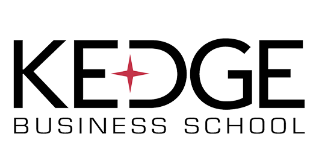

KEDGE BUSINESS SCHOOL
Campus de Marseille

🤔 A PROPOS DE KEDGE 🤔
KEDGE Business School est une grande école de commerce française privée d’intérêt général. Elle est née en 2013 de la fusion entre deux écoles : BEM (ex ESC Bordeaux) et Euromed Management (ex ESC Marseille).
KEDGE accueille ses élèves sur 11 campus. 7 sont basés en France : Kedge Paris, Kedge Bordeaux, Kedge Marseille, Kedge Toulon, mais aussi 3 campus associés (Avignon, Bastia, Bayonne), ainsi que 2 en Chine (Shangaï et Suzhou), 1 au Sénégal (Dakar) et 1 en Côte d'Ivoire (Abidjan).
L’école de commerce supérieure propose des formations initiales et continues du bac+2 au bac+6, en particulier dans le management. 4 programmes généralistes se démarquent : le Programme Grande Ecole, le KEDGE Bachelor, l’International BBA et l’EPB International. Ces formations sont idéales pour des étudiants souhaitant acquérir un enseignement complet en management.
Sont également dispensés des programmes spécialisés, dont la plupart permettent d’obtenir un diplôme de type master. Les étudiants peuvent suivre des masters en management dans les domaines de la finance, de la qualité, de l’immobilier, des ressources humaines, du commerce international ou encore dans le supply chain. Des formations en alternance sont également disponibles dans ces domaines.
Tous les ans, KEDGE Business School apparaît bien positionnée au classement des grandes écoles de commerce, pour la qualité des études qu'elle propose.
🔢 CHIFFRES CLES 🔢
Plus de 20 Masters différents
70 000 diplomés
14 800 étudiants à travers le monde
95% des diplômes embauchés 4 mois après obtention de leur diplôme
🚨 REJOINS-NOUS 🚨
N'hesite plus et rejoins nous à KEDGE !
